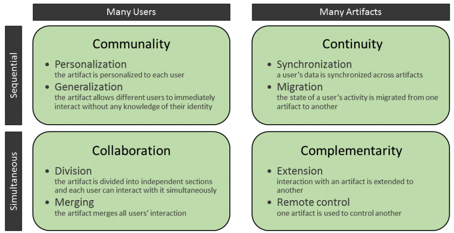
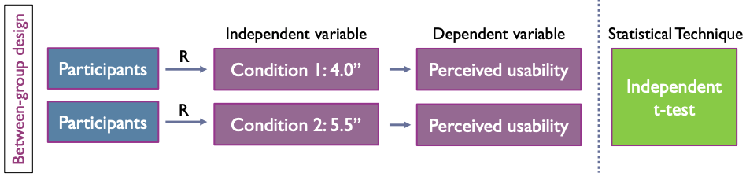

Exam Questions¶
 Question 1¶
Question 1¶
- How can we define and characterize mobile computing?
-
Give examples of the different eras.
-
What is context and why is important for mobile computing?
- What is Big C and Small C?
- How can we communicate context to others?
Mobile computing
-
Mobile computing can be divided into a number of eras, or waves, each characterized by a particular technological focus, interaction design trends, and by leading to fundamental changes in the design and use of mobile devices
-
Divided into eras - characterized by
-
particular technological focus
- interaction design trends
-
by leading to fundamental changes in design and use of mobile devices
-
Eras
-
Portability
-
Miniturization
-
Connectivity
-
Convergence
- "doing many things"
- Not just phone or computer anymore
- You can now play and do spreadsheets on the phone (Nokia 9000)

-
Divergence
- "Doing one thing well"

-
Apps
- In the beginning, only the manifactures made apps
- limited selection
- Then came Developing kits and app stores
- Google Play - Apple App Store
-
Digital Ecosystems


Context
- Everything about how something is used, who uses it, where, when and how
- What is important to the users, which can depend on different external factors
- The circumstances that form the setting for an event, statement, or idea, and in terms of which it can be fully understood
- Context is important for mobile computing
- The context can easily change because of mobility
- Car vs train vs at home
- Example - Spotify Car Mode
- Context can be defined in two ways
- Big C - Context
- Small c - context
Big C - Context
- “Context enables us to better understand a person, a place, a thing, a situation, or even an idea by adding information to it”
- "How the users will derive value from something they are currently doing" / "the understanding of circumstance"
- "standing in front of Berlin Wall and reading about it on Wiki" => adding Context to task
- "This information is providing me Context or better understanding of what this moment in time means to me"
- Some Questions
- The Problem
- What problems are you trying to design a solution for?
- What value do you want to bring for your users?
- Users and their situation
- Who are your users and what do you know about them?
- How are they able to or how will they interact with your design?
- Location
- What and where is it happening?
- Markets
- How is your idea different from other designs already available?
Small c - context
- "the mode, medium, or environment in which we perform a task" / "the circumstances of understanding"
- Using phone in car => more private information, but restricted because driving
- Using phone in train => less private information, but not restricted
- Understanding how the location changes a users behavior and what they want from their device
- Which requirements / constraints lies in the context
- Physical and spatial considerations
- Are there any restrictions in the physical environment or the location?
- e.g. will I be able to use the design all the time?
- Technological considerations
- How are different devices present in different situations?
- e.g. why smart watches might be better than smartphones when running or swimming
- Psycological/demographical considerations
- Users mental models and prerequisites for interacting with certain devices
- e.g. knowledge, common conceptions in community etc.
Communicate Context:
- Personas
- Helps maintain perspective of users
- Fictional - created based on research - never of assumptions
- Represent different user types
- Helps understand users’ needs, experiences, behaviors and goals.
- 4 types
- Goal oriented
- Users' goals - workflow, contexts, attiturdes
- Based in in-depth ethnographic research
- Provides focused design and communication tool to finish discussions
- Role based
- Users roles in organization
- data-driven - incorporate data from both qualitative and quantitative sources
- efficient design tool - our cognitive ability to use fragmented and incomplete knowledge to form complete vision of people who surround us
- Engaging
- Designers seeing users as stereotypes -> actively involved in the lives of personas
- Requires broad knowledge of users
- Data should include information about - social background, psychological characteristics, emotional relationship with the focus area.
- Fiction based
- To explore and design - generate discussion and insights
- Based on intuition and experience
- Creates an empathetic focus in the design process
- Originate from brainstorming and workshops - participation from company
- How - 11 steps
- Collect extensive data on target users.
- Determine the qualities of and differences between users.
- Develop a hypothesis from the research, determining the qualities of and differences between users.
- Ensure stakeholders agree on the hypothesis about the users.
- Determine a number of personas – more than one per project, but focus especially on one
- Name and describe each persona in 1-2 pages, including:
- A picture.
- (CONTEXT): User’s values, interests, education, lifestyle, needs, attitudes, desires, limitations, goals and behavior patterns.
- Extra details about the persona (e.g., interests) – anything to make him/her more real and relevant and help build empathy. A written story is better than bullet points.
- Describe several situations/scenarios prompting the persona to use your product – put him/her in contexts with problems to overcome.
- Include everyone involved in the project so they’ll accept the persona or advise revisions.
- Send them the persona to use in their work
- Ensure everyone develops scenarios – these should expose the persona optimally to potential use cases
- Make continuous adjustments – revisit the persona; add new features; add required new personas; discard outdated personas.
Question 2¶
- How can we collect data about the context of our idea?
- Give examples of the different ways of communicating your idea to other team members/costumers/users?
Collect data:
- Contextual Inquiry
- Interviews (deep)
- Structured - almost questionare - Replicable - lacks richness
- Semi-structured - loose script - balance between richness and replicability
- Unstructured - no script - rich - not replicable
- Focus groups - group interview
- Interview tips
- Open questions
- Avoid Leading questions that make assumptions
- Learn the participants language
- Use probe questions
- Tell me more about...You said “desperate.” What do you mean by that?
- Accept awkwardness (pregnant pauses)
- Questionaries (general)
- Inspection - Observation
- Roles:
- Observer Participant - fly on the wall
- Participant Observer - field worker is full participant in activities studied
- Technology Tours
- What to Observe:
- Space - physical space - actors: names and relavant details of people involved
- Activities - what are actors doing and why?
- Objects - physical objects present (eg. furniture) - Acts: specific individual actions
- Events - Observing part of special event?
- Time - Sequence of events
- Goals - Actors trying to accomplish?
- Feelings - Mood of group and individuals
- The challenge - what people say and what they do are not the same.
- Combine interview and observation - triangulation
Communicate idea:
- Storyboard
- "A storyboard communicates a story through images displayed in a sequence of panels that chronologically maps the story’s main events."
- Used to gain common ground
- Research and usability
- Parts
- Scenario
- Who is persona?
- Short text describing scenario
- E.g. Corporate buyer, James, needs to replenish office supplies
- Visuals
- Each step in scenario is represented visually in a sequence - sketches, illustrations, photos
- Include details relevant to the story
- what the users environment looks like
- speech bubbles with quoutes from the user
- sketch of the screen user is interacting with

- Captions
- Each visual has corresponding caption
- Caption describes user's actions, environment, emotional state, device, and so on
- Captions are concise and dont typically exceed two bullet points
- Steps
- Gather your data (ie. interviews)
- Choose fidelity level (ie. sketches, photos)
- Define basicsx (persona and scenario)
- Plan out steps (which steps will storyboard contain)
- Create visuals and add captions (create you storyboard - stick figures are okay)
- Distribute and Iterate (ie. to audience, stakeholders)
- Wireframes
- Wireframes are used early in the development process to establish the basic structure of a page before visual design and content is added
- Demonstrates key elements of a design
- Demonstrates key structure of a page/app
- Low-fidelity: Quicker and cheaper to make changes to
- Mock-ups
- Mock-ups are used by designers mainly to acquire feedback from users about designs and design ideas early in the design process. Mock-ups are 'very early prototypes' made of cardboard or otherwise low-fidelity materials.
- Visualises the key elements of a design
- Still not final design, but conveys more design than wireframes
- Low-fidelity: made quicker and dirty - easy to make changes to
- Example in cardboard
Question 3¶
- What is a digital ecosystem?
-
How can we classify interaction with multiple mobile devices in a digital ecosystem?
-
Give short examples of the four categories of interaction (Collaboration, Communality, Complementarity, Continuity)
Digital Ecosystem
- Theoretical Framing
- A network of nodes interacting - consists of users and digital artifacts, bound dynamically by the users' actions
- When a user interacts with not just one, but multiple devices at once
- or multiple users interact with a single device
- Example:
- Google Cast
- Apple's announced Universal Control - move cursor from Mac to iPad
Classify interaction with multiple mobile devices in ecosystem
With a focus on interaction 4 structures emerges - like a database

- The interesting structures are the three with either many users or many artifacts
- We can further divide interactions with several artifacts into two
- Sequential - users first interact with one device - then continues with another device
- Example: Checking emails on phone - then moving to desktop to read specific one or answer
- Simultanious - users uses several devices at once
- Example: Overview of calendar on large screen while sending meeting invitation from phone
- This leads us to the 4C Framework
- Combines the structural relationships of many users and many artifacts with the differentiation between sequential or simultaneous in a 2x2 matrix

4 Categories of interaction
- Communality
- Artifacts are shared between users, but only one user interacts at a time
- Subcategories
- Personalization - relationship between users and artifacts are individual and tailored to each person
- Example: Accounts on social media on shared tablet
- Generalization - relationship is same for everyone
- Example: Ticket booth at train station - automatic passport photobooth
- Might seem trivial - but decision can have great impact on system
- Eg. login can be irrelevant
- Collaboration
- Simultaneous interaction by many users
- Subcategories
- Division - interaction with artifact is split between users
- Indiviual parallel points of attention
- Example: Split-screen gaming
- Can also be done by other means such as different sound channels
- Merging - several users's simultaneous interaction with an artifact
- Example: multi-user board games on single tablet - mixing desk
- Continuity
- Sequential interaction with several artifacts
- Interaction starts on one device and continues on another
- Subcategories
- Synchronization - data and data structures is kept consistent across all devices
- When artifact synchronizes with ecosystem - content and its organization is replicated
- Example: Cloud based storage (Dropbox, Google Drive, etc.) - email and calendar services
- Migration - users switch between artifacts by transfering state of their activity - partially or completely
- Example: Amazon Kindle - continue reading, Google Cast - continue playback on large screen
- Complementarity
- Simultaneous interaction with multiple arifacts
- Interaction with one artifact adds to the interaction with another
- Jointly makes up a larger whole
- Subcategories
- Extension - One digital artifact directly adds to another
- Example: Using several smartphones and tables to create large display
- Example: Companion apps - Adobe Nav - Digitizer app
- Remote control - One digital artifact controls another
- Examples: TV Remote apps - Home automation
Question 4¶
- Why is it important for designers know the difference between devices and platforms when we design for them?
- What is skeuomorphism?
- How do we ensure that our design will fit into the mobile platform that we design for (e.g., Android, iOS)?
Different devices and platforms
- Different things are possible on different platforms
- Performance, screen size, operating system
- Different contexts
- Smartphones can show more details than smartwatches
- Following the design guidelines makes the app familiar
- Using same icons lets users know what buttons do
- Example: share icon is different on iOS and Android
- We can take advantage of platform features - such as widgets
- Notification actions on Android
- Devices says something about the users
- People using Android may be "more powerusers"
- Linux vs Mac/Windows
Skeuomorphism
- Interface objects that mimics their real-world counterparts
- Recycle bin - floppy disk - toggles - buttons - dials
- sounds - animations
- Volume icon where the speaker outputs more or less sound
- Makes users know what they can do with interfaces
- Example: Folders in a file system - users know they can put files into it even though its a new concept
Design Guidelines
- Follow design guidelines provided by platforms - Apple - Google
- iPhone - purpose
- Clarity - Functionality motivates design
- Deference - Content fills the entire screen
- Depth - Go into depth with content
-
iOS - guidelines
- Aesthetic Integrity
- How appearance and behavior integrate with its functions
- Productivity vs Fun/Gaming
- How appearance and behavior integrate with its functions
- Consistency
- Familiar standards and paradigms
- system provided interface elements
- well-known icons
- standard text styles
- uniform terminology
- Example: pull down to refresh
- Familiar standards and paradigms
- Direct Manipulation
- Rotating device - using gestures to affect content
- Example: pinch to zoom - swiping
- Feedback
- acknowledges actions and shows results
- Example: Shutter sound - vibration
- Metaphors
- metaphors for familiar experiences - either rooted in real world or digital world
- User Control
- People - not apps - are in control
- Apps suggest course of action or warn about dangerous consequences
- Aesthetic Integrity
-
Apple watch - purpose
- Lightweight interactions - short interaction time
- Holistic design - not just on screen interaction
- "Holistic design takes into account the person, the device, the moment, the ethnographic environment, the physical space as well as human behavior and psychology..."
- Personal communication - Meant to be worn
- watchOS - guidelines
- Glanceable
- Interactions occur over short periods of time
- apps must convey most important information up front - clearly and without distraction
- Actionable
- anticipates user's needs - ensuring onscreen is always current and relavant
- custom notification interface include custom actions without opening app
- Responsive
- interactions should be quick
- responds to user interaction with immediate feedback
- what the app is gonna do
- notifications to deliver progress updates later
- Glanceable
Question 5¶
- What is a prototype?
- When in the design process do, we introduce prototypes?
- Give examples of the different prototypes and their strengths and weaknesses.
Prototype
- simple experimental model of proposed solution
- used to test or validate ideas, design assumptions and other aspects of conceptualization
-
cheap and quick
-
Why?
- reveal assumptions and biases
- uncover insights about users
- Attention points:
- People - those whom you are testing and observers
- Objects - static and interactive - prototype and objects people and/or prototype interacts with
- Location - places and environments
- Interactions - Digital or physical - between people, objects and location
Prototypes - When

...
Different Prototypes
-
Low fidelity
- Medium unlike final medium - e.g. paper, cardboard
- Quick, cheap, easily changed
- Examples:
- Sketches of screens
- task sequences
- post-its
- storyboards
- Wizard of Oz
- Simulating actual functionality - combine different tools - tablets, email systems, PowerPoint with human intervention
- Pros
- quick, inexpensive
- instant changes and new iterations
- disposable/throw-away
- minimal time and effort
- Available to all
- Encourages and fosters design thinking
- Cons
- lack of realism
- results may lack validity
- may not be appropriate for intended users
- removes control from the user
- lack of realism
-
High fidelity
- Materials expected to be in final product
- Looks more like final product
- Example - software prototyping
- Pros
- Engaging - stakeholders see vision realised
- can judge how it meets expectations, wants, and needs
- User testing - high validity and applicability
- Cons
- Takes time to produce
- Test users more inclined to focus and comment on superficial characteristics
- Designers often are often loathed to make changes
- Gives test users a false impression
- Making changes can take long time - delaying project
- low-fi during early stages - high-fi during later stages
Question 6¶
- What kind of data can we collect in mHCI evaluations and how?
- Why do we collect such data, what is our purpose?
- Are there any differences between conducting evaluations in a lab and the field?
Data
- Qualitative data
- What
- Audio and video recordings
- Notes
- Materials produced by participants - sketches, drawings, pictures, etc.
- Usage data
- Online comments and articles
- ...
- How
- Interviews and focus groups
- Observations
- Photo/Video/Voice Elicitation
- Diaries/journaling
- Participants write down while working - can be talked about later
- Re-enactment Videos
- Cultural/Mobile Probes

- Online videos (e.g.Youtube)
- Why
- Explores attitudes, behaviors, and context in-depth
- Encourages discussion
- More opportunities for asking - people can explain answers
- Quantitative data
- What
- Anything that can be understood as a number
- Time
- Performance metrics
- Success rates
- Answers to questionnaires
- Data is structured
- How - scientific approach
- Intuition and/or authority to generate ideas about phenomenon/behavior
- Skepticism: ideas must be evaluated on the basis of careful logic and results from scientific investigations
- Empiricism: knowledge is based on observations and the study of reality
- Methods
- Case studies
- Intensive empirical investigations of contemporary phenomena within small size entities such as groups, organizations, individuals, systems or tools in real-life context with the researcher distinct from the phenomena being studied.
- Field studies
- taking place in “the real world” covering a range of quantitative approaches in which a number of independent variables are manipulated.
- Usage studies
- Large-scale log-file based test-scenario in which a newly designed system is exposed to its target users in order to test its resilience under real-use conditions, and if and how it is employed for the tasks for which it was intended.
- Lab experiments/studies
- taking place in a controlled environment created for the purpose of research or in dedicated laboratories allowing a detailed focus on specific phenomena of interest with a large degree of experimental control.
- Surveys
- Informs research gathers large amounts of data through various techniques such as questionnaires and interviews from a known sample of selected respondents assumed to be independent of their environment.
- Why
- Understanding - finding the meaning of studied phenomena
- ex: frameworks or theories developed from collected data
- Engineering - developing new systems or parts of systems
- ex: an interaction technique for a mobile device, or a mobile application or device
- Re-engineering - improving existing systems by redeveloping them
- ex: adapting a web browser to a small display
- Evaluating - assessing or validating products, theories or methods
- ex: the usability or user experience of a specific application, or a theory of interaction
- Describing - defining desirable properties of products
- ex: a mobile guide system
Lab vs Field
- Field takes place in the wild - lab is a controlled environment
- Field is more natural but we cannot control everything
- In field we can get results that we cant get otherwise
- Some participants might "realize" what they are doing
- We can see how our product/prototype fits users’ ’natural habitat’
- In the field we often collect both quantitative and qualitative data
- Field is harder to conduct
- Example: mounted camera - from lecture 10
Question 7¶
- Assume you have collected qualitative data.
- What is the process that you need to follow to conduct an analysis of this data?
- What are the two approaches for coding qualitative data, and what are their differences?
Qualitative data analysis
- Transform unstructured data into something meaningful/useful for design
- To gain deep/detailed knowledge of a situation/problem
- To know how our prototype/product is embedded into everyday life
Process

- Define the dataset
- Where do we collect data?
- Clean the dataset
- Is everything relevant?
- Code the dataset
- Assigning categories and descriptors to blocks of text - qualitative data in general
- 2 approaches:
- Emergent coding
- Extract structure of data from dataset
- No preconceptions exist
- Objectivity is important
- Often combined with grounded theory
- objective is to create a theory
- Process
- Code data
- Develop concepts
- Group concepts into categories
- Produce a theory

- A priori coding
- Apply existing theory (taxonomy/framework) to structure data
- Some preconceptions on what we will identify
- Again, objectivity is important

- Process
- Identify a relevant theory/taxonomy
- Code the data (a priori coding)
- Identify how much theory explains situation
- If necessary, feed back to theory
- How to code:
- Look for key items
- Assign codes
- Reflect and (redesign) codes - iteratively
- Reflect on the relationship between the codes
- Afterwards, may compare with:
- similar studies/evaluations
- results of previous version of product/prototype
- different target groups
- Extract Findings
Question 8¶
- What is a research hypothesis, and are there different types?
- What is the difference between independent and dependent variables?
- What is the operational definition of a variable?
- How can we assess the quality of operational definitions?
Research Hypothesis
- A specific idea or question which can be tested through empirical investigation (using the scientific approach)
- Null hypothesis - "no difference between conditions"
- Alternative hypothesis - " is difference between the conditions"
- They have to be mutually exclusive
- Why null and alternative?
- Long tradition in experimental research
- In statistics we do not test if two conditions are different
- We do test if there are the same!
Variables
- All the things we can measure or manipulate are called variables.
- must have more than 2 levels
- Independent vs Dependent
- Independent variable
- Variable we think is the cause
- Variable that is independent of a participant’s behavior
- Variable that we manipulate in our experiment
- Dependent variable
- Variable we think is the effect, as it depends on the cause
- Variable that is dependent on a participant’s behavior
- The variable that we measure in our experiment
-
Examples

- Sex has an effect on perceived usability
- Income has an effect on happiness
- Education has an effect on IQ level
- Input devices have an effect on efficiency
-
Operational definition
- defined procedure to measure or manipulate variable
- If many options, we select one
- selected procedure is called the operational definition of the variable
- Example - Aggression
- number of times a kid hits a toy
- score on a aggression questionnaire
- number of times a kid cursed, etc.
- Adequacy
- Construct validity - adequacy of operational definition
- Content Validity - content of measure is linked to true meaning of variable
- Convergent Validity - scores of measure are related to other measures of the same construct
- Discriminant Validity - scores of measure are not related to other measures that are theoretically different
- Other types
- face validity - it "looks like" it is going to measure what it is supposed to measure
- predictive validity -
- concurrent validity - how well a new test compares to an well-established test.
Question 9¶
- What can be the sources of systematic errors in an experiment?
- What can we do in order to minimize/eliminate them?
- Why is it important to pilot test?
Systematic Errors
- THE rule in experiments
- All confounding/external variables that may have an effect on our conditions must be controlled
- Either through randomization
- Or by keeping them constant
- THE RULE
- Our aim is that all the conditions differ only on the independent variable and nothing else
- If we are successful, our experiment has high internal validity
- Systematic error - due to confounding/external variables that covary with our independent variable
- Strong negative effect on internal validity
- Usually systematic errors push the true scores at the same direction
- Sources of systematic errors
- Participants
- carry their own experiences and expectations, and have different characteristics
- get tired if kept a long time - fatigue effect
- Tips
- Select participants that fit target group - representative of the population
- Track, based on experience and literature, all the characteristics that can influence experiment
- Try to minimize the fatigue effect either by having breaks or by introducing fun, irrelevant activities
- (i.e. ask them to play a game for a while)
- Keep participants blind regarding experiments purpose - manipulate them
- Researchers
- We can influence by simply being there
- By commenting on participants' performance
- Tips
- Same researcher always communicates with the participants
- Same instructions provided to all - video good solution
- Never comment on their behaviour
- Always be prepared and polite
- Always have a talk after the experiment - debriefing session
- Often we keep the moderator blind for the purpose of our experiment - double blind experiment
- Digital artifacts
- Digital artifacts might have characteristics that can influence the experiment
- screen sizes, keyboards, brands, etc.
- Tips
- Carefully select digital artifacts participants will interact with and try to remove any influential characteristics
- Keep same digital artifacts throughout experiment
- Environment
- Pysical environment can influence experiment
- Tips
- Prepare a nice (suitable) environment
- Never change the physical conditions
- (i.e. keep the noise at the same level, have the lights always on, etc.)
- Never change the position/placement of the participants
- (i.e. ask them all to sit the same way)
- Procedure
- Framing of tasks can influence results
- Order of tasks influences results - order effect
- Practice gained in one task will influence the rest - practice effect
- Experience they will have from a task will influence the rest - carryover effect
- Tips
- Meaningful and clear tasks
- Always randomize the sequence of the tasks
- Measurement tools
- Tools used to measure dependent variable will influence result
- Tips
- Always use measurement tools that are reliable
- Always test their performance
- Never change measurement tools during the experiment
Pilot test
- It is is important to pilot test to
- make sure that everything is working as expected
- make sure that the participants are influenced only by the independent variable among the conditions
- have preliminary findings that will tell us if we need more conditions, or a different setup
- check the tasks we have designed for:
- Ceiling effect: too easy tasks and all the participants reach the maximum performance
- Floor effect: too difficult tasks and hardly anyone performs well
Question 10¶
- What is the difference between basic and complex experiments in terms of number of variables and used statistical techniques?
- What are the differences between between-subjects and within-subjects designs?
- What are their advantages and disadvantages?
Basic vs Complex experiments
- Basic (simple)
-
Only 1 independent variable
-
The independent variable has minimum two levels - leads to minimum two conditions, treatments, or groups
-
If we have two conditions we use t-test
- Within-group design => Paired samples t-tes
- Between-group design => Independent t-test

-
If we have more than two conditions we use ANOVA
- Between-group design => One-way independent ANOVA
- Within-group design => One-way repeated measures ANOVA
-
Complex
- More than two independent variables
- The independent variables have minimum two levels
- Often callled factorial designs - we have more than one indpendent variable (factors)
- Simplest factorial design is known as 2x2
- Two independent variables, each with two levels
- Number of lvels of first IV x Number of levels of second IV x Number of levels of third IV
- Statistical Technique - Factorial ANOVA
- Between-subjects design => Independent factorial ANOVA
- Within-subject design => Repeated measures factorial ANOVA
- Mixed design => Mixed factorial ANOVA
Within-group designs¶
- The same participants experience both conditions
- Often called repeated measures design
Advantages
- We need less participants
- The systematic error caused by the participants will be the same in both conditions - easier to get better results
Disadvantages
- Hard to control the practice, order, and fatigue effects
Counterbalancing¶
- All possible orders of conditions are included in the experiment

Between-group designs¶
- Different participants experience the conditions
- Often called independent groups design
Advantages
- Easier to control the practice, order, and fatigue effects - often do not exist
Disadvantages
- We need many participants
- The systematic error caused by the participants' characteristics is more difficult to control